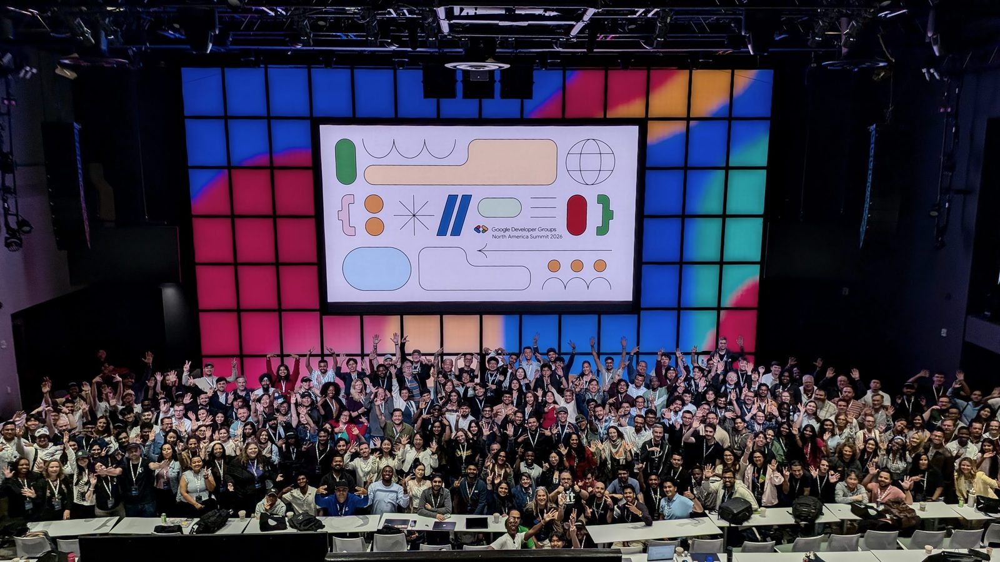
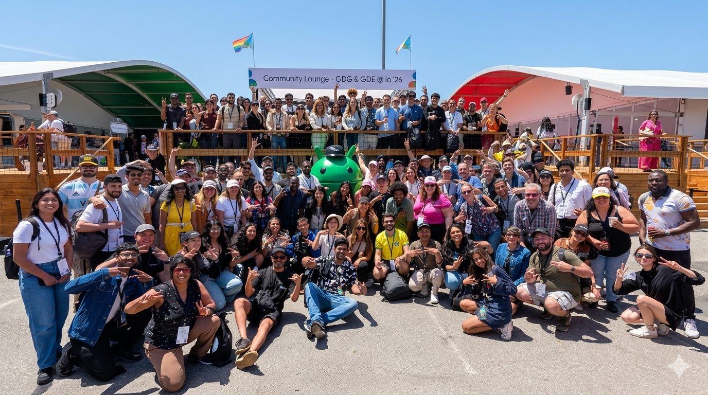
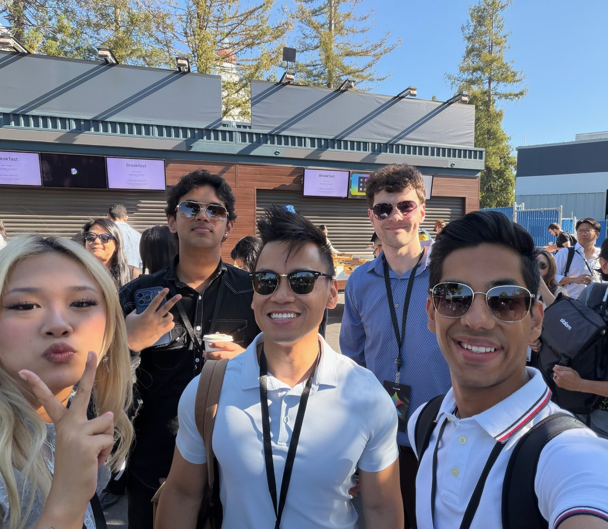
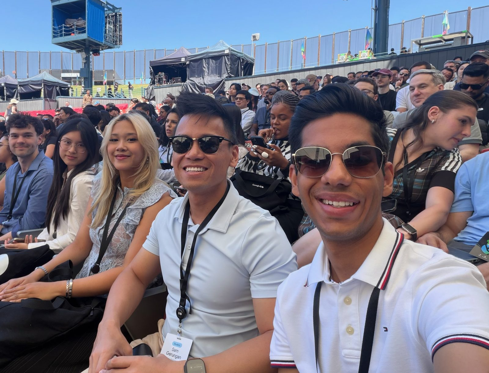
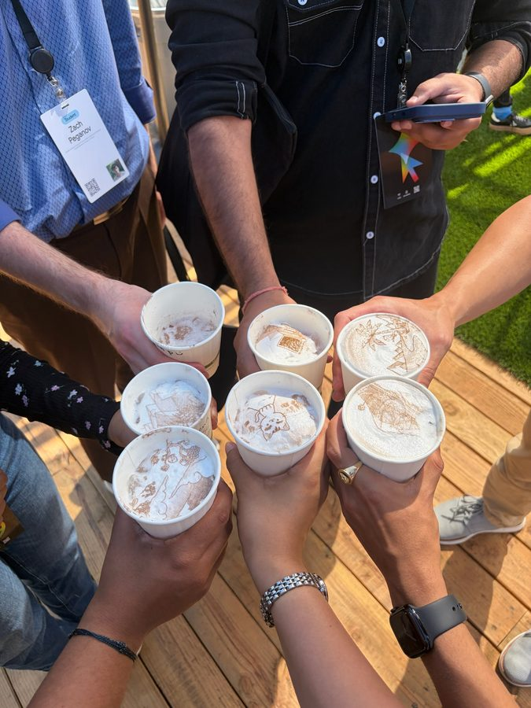

Fall 2026 · First meeting
Welcome to GDG.
Scan to join the chapter on Bevy. Every event and RSVP lives there.
The chapter on BevyGDG on Campus Riverside City College is an independent group; our activities and the opinions expressed here should in no way be linked to Google, the corporation.
What is GDG?
Google Developer Groups
- Local groups of people who build with tech.Run by volunteers, in cities all over the world.
- GDG on Campus is the college version.Until 2024 it was called Google Developer Student Clubs.
- We’re GDG on Campus Riverside City College.Started here in Spring 2026.
What Google gives us, and what’s ours.
From Google
The name, a network of chapters, and programs like DevFest and Build with AI.
Ours
Everything in this room. Student-run, independent, and nobody here works for Google.
GDG North America Summit 2026
One network. Chapters from all over North America.
This is what you just joined.

What being part of GDG gets you
- A network bigger than RCC.Other chapters, other campuses, and working developers.
- Google’s events and programs.Things like DevFest and Build with AI, as each season allows.
- Every event on one page.RSVP and check in on our chapter page at gdg.community.dev.
Google I/O 2026
The GDG meetup at I/O.
GDG members and Google Developer Experts, in the Community Lounge.

Last May
We took the club to Google I/O.
Google’s yearly developer conference, in Mountain View.

Google I/O 2026
Yes, we rode the Google bikes.
Somebody had to.
Google I/O 2026
This is where the network can take you.
That’s the point of joining something bigger than RCC.

A few more from the trip.
- The main stage
- The snack cart
- A drumline, for some reason

Latte art
Photos and clips: GDG on Campus RCC, I/O 2026
Our GDG
A practice floor for the skills no class assigns.
Say what you want. Ask someone who can say no. Show the work to someone who wasn’t there.
Most people have these conversations in their head.
Most weeks
You hear about the internship after the deadline. You rehearse the interview alone, in the car.
Thursdays
You hear about it in this room. You rehearse it on a person who can push back.
Our philosophy
How we run it
- Every major. Every level.Nothing on a Thursday needs a laptop or a CS class.
- You do it. We don’t lecture.At least half of every hour is you, doing the thing.
- You leave with receipts.A message sent. An appointment booked. A demo in front of guests.
- Build it, then pitch it.Want to make an app? Opt-in build events, then you pitch what you made.
Meet someone · Pairs · One minute each
Your story so far, in one minute.
1:00
Where you started. Where you are. Where you’re headed. T to start, R for the second person.
Hands up
Whose story do you still remember?
Now say why. What made it stick?
Storytelling is signaling
People believe what you show them, not what you claim.
Every story you just told was sending signals about you, on purpose or not.
Claim it, or signal it.
Claiming
“I’m really passionate about healthcare.”
Signaling
“I rewrote the campus clinic’s intake form. Check-in went from eleven minutes to four.”
This semester
What we’ll work on
- Voice.Get understood by someone with no reason to listen.
- Ask.Ask people with power for things, and use a no.
- Evidence.Make your work visible to someone who wasn’t there.
- Build.Opt-in events. Make something with Google’s AI tools, then pitch it.
Every week
What a Thursday looks like
- 2:30 Open. Dates and asks, five minutes, no discussion.
- 2:35 Warm rep. Everyone has spoken by 2:42.
- 2:42 The rep. The week’s skill, done in pairs. Never a talk.Eight-second answers. A hostile listener. Asking for what you’re owed. A failure story that lands.
- 3:00 Live fire. Three people, in front of the room, on a timer.Then one thing to do before next week.
This semester
Three arcs. Say it, ask for it, prove it.
- The Cold Open
- The Twenty-Second Answer
- The Sentence That Gets You In The Room
- Hostile Room
- The Thing You Actually Want
- Send It
- Anatomy of an Ask
- The No Drill
- What You Are Owed
- Office Hours
- Nobody Saw You Do It
- The Failure Story
- Defend It
- Demo Day
Next semester
We’re hosting a hackathon for community college students.
Most hackathons are built around four-year schools. This one’s built around us.
What we want it to do
- Your first hackathon, free.Built for people who’ve never been to one.
- A real project by the end.Build it with a team, then demo it to judges.
- Meet people from other campuses.We’re building it with other community colleges nearby.
- Help us build it.Planning starts this semester. Tell us if you want in.
Try it live
I built this at a hackathon.
It’s called SosheIQ. It plays the other person and coaches you while you talk.
The phone has the keyboard. Click off it to get the slides back.
Before next Thursday
Join the Discord.
That’s where every date goes first.
Thursdays, 2:30 to 3:30 PM · BLCIS A-210
Scan for the site. The Discord button is on it.
GDG on Campus Riverside City College is an independent group; our activities and the opinions expressed here should in no way be linked to Google, the corporation.